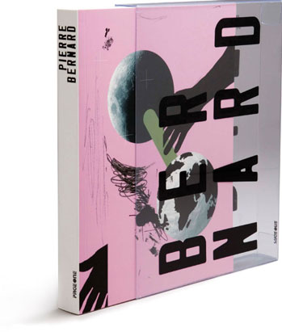

The master of Design
Editor+Design: Jianping He
Staff: Xin Gu
Measures: 19 x 25 cm, Paperback in slipcase
Place and date: Berlin, Oct. 2006
Publisher: PageOne (Singapore) & Hesign (Berlin/Shanghai)
THE MASTER OF DESIGN series is a 4-book series which features the masterpieces inclusive of design philosophy and concepts of the four internationally acclaimed graphic designers. They include Niklaus Troxler (Switzerland), Eiko Ishioka (Japan), Pierre Bernard (France) and Werner Jeker (Switzerland).These designers have become renowned for the revolutionary and innovative designs they have created since the1960s. Each book in the series comprises interviews and reviews that cover the major achievements of the featured designer, inclusive of design philosophy and concepts.
Pierre Bernard
ISBN: 981-245-431-4 (Chinese+English)
ISBN-13: 978-981-245-427-0 (English)
Pierre Bernard is a graphic designer, has worked for the Louvre and Pompidou Centre, and is a teacher at the Ecole Nationale Sup¨¦rieure des Arts D¨¦coratifs, Paris
Photo by Phillip Birau (Berlin) 2007
Dr Peche(France)
Price: 30 Euro
(Only for European market)
